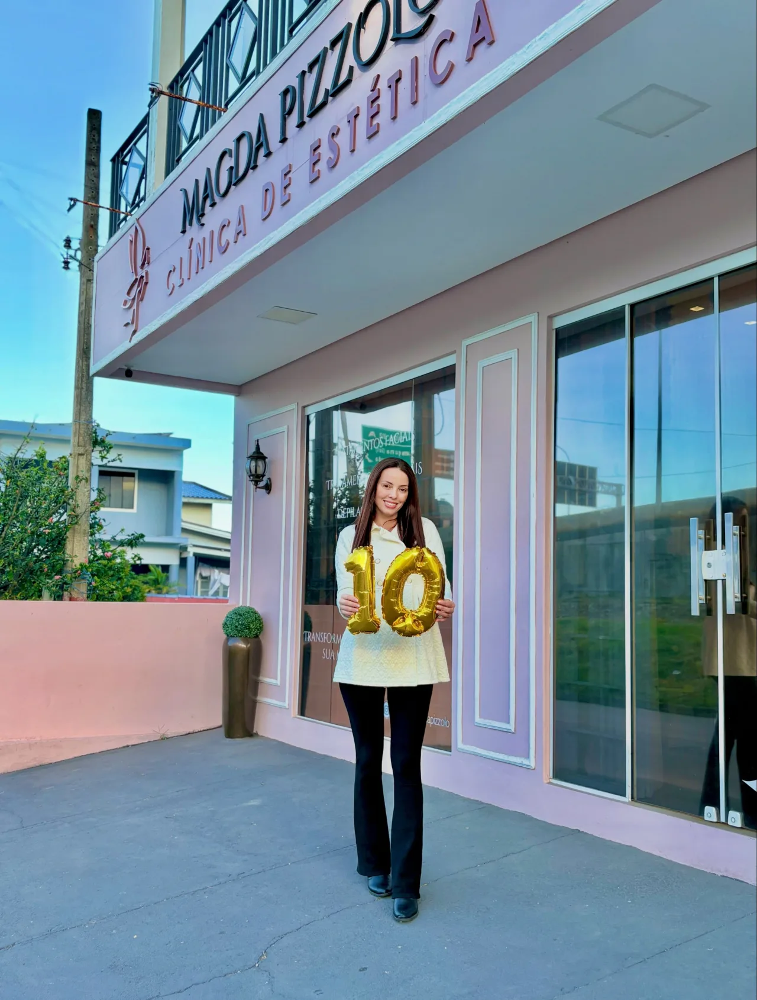
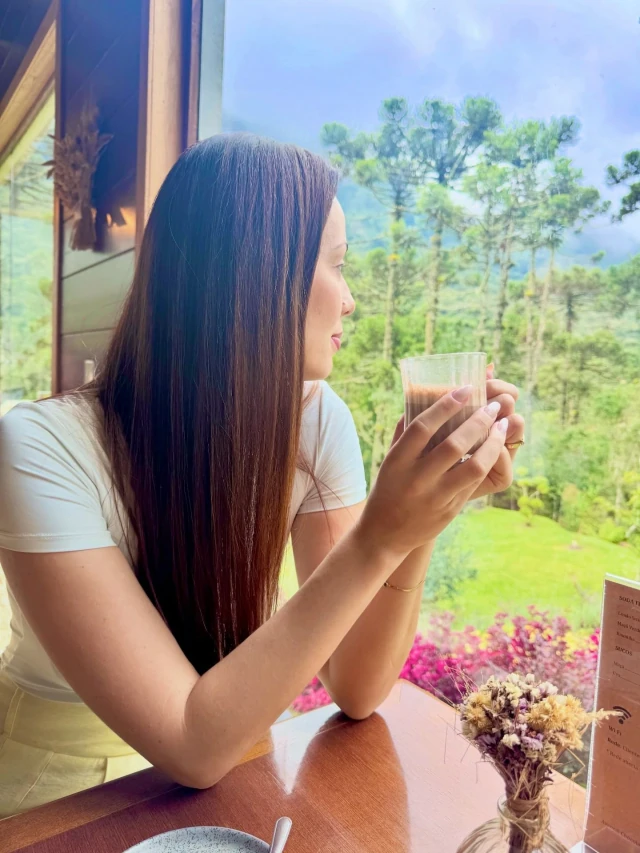

Biomédica esteta · Laguna, SC
Dra. Magda Pizzolo
Clínica de estética em Laguna. Antes da consulta, as perguntas certas: seis dúvidas que a Dra. Magda costuma explicar nos vídeos dela.

A clínica
Uma clínica em Laguna com o nome dela na porta.
Na fachada, em letras grandes: Magda Pizzolo, Clínica de Estética. É em Laguna, Santa Catarina, que a Dra. Magda, biomédica esteta, atende. Nos vídeos do perfil dela, ela explica de modo educativo o que é a harmonização facial.
- Profissional
- Biomédica esteta
- Cidade
- Laguna, Santa Catarina
- Perfil
- @estetica_magdapizzolo
- Endereço e horários
- A confirmar com a clínica
Antes da consulta
Seis perguntas antes da consulta.
São dúvidas de quem pensa em harmonização facial. As respostas aqui são gerais: o que vale para o seu rosto, só uma avaliação define.
Role a página, arraste o cartão ou use as setas do teclado.
-
01 / 06
Seu rosto parece sempre cansado?
O cansaço no rosto pode ter origens diferentes em cada pessoa. A avaliação é o que mostra o que faz sentido no seu caso.
Falar com a Dra. sobre isso -
02 / 06
Essa região entrega a sua idade?
Cada rosto tem uma história, e a idade aparece de jeitos diferentes. Olhar para o conjunto, e não só para uma região, é um bom ponto de partida.
Falar com a Dra. sobre isso -
03 / 06
Dá para melhorar só uma parte do rosto?
É uma dúvida comum. A resposta depende do seu rosto e do que incomoda você, por isso começa numa avaliação, não numa promessa.
Falar com a Dra. sobre isso -
04 / 06
O que saber antes da harmonização facial?
Vale chegar com perguntas: o que você quer mudar, o que prefere manter e o que ainda não entendeu. Tirar dúvidas antes faz parte do processo.
Falar com a Dra. sobre isso -
05 / 06
O que define a sua harmonização?
Não existe uma harmonização igual para todo mundo. O que orienta o plano é o seu rosto e a avaliação profissional, não um modelo pronto.
Falar com a Dra. sobre isso -
06 / 06
E o Método MAGnífica?
É o nome que a Dra. Magda dá ao método dela. Os detalhes, ela mesma explica: pergunte na consulta.
Falar com a Dra. sobre isso
O método dela
MAGnífica
Método MAGnífica é o nome que a Dra. Magda deu ao método dela.
O que ele envolve, como acontece e para quem faz sentido são explicações que cabem a ela, na consulta. Aqui o convite é simples: leve a sua pergunta.
Perguntar sobre o métodoAssuntos do perfil
Temas que aparecem nos destaques dela.
Lista a confirmar com a clínica: serviços vigentes e descrições serão validados antes de qualquer uso.
- LábiosA confirmarPerguntar sobre lábios
- MelasmaA confirmarPerguntar sobre melasma
- MicrofocadoA confirmarPerguntar sobre microfocado
- Método MAGníficaA confirmarPerguntar sobre o Método MAGnífica
Contato
Ficou com uma pergunta que não está no baralho?
Mande a sua pelo WhatsApp. A conversa começa com uma mensagem curta, já escrita.
Mensagem pronta
Olá, Dra. Magda! Gostaria de agendar uma consulta.
WhatsApp (48) 99909-5038 · @estetica_magdapizzolo
